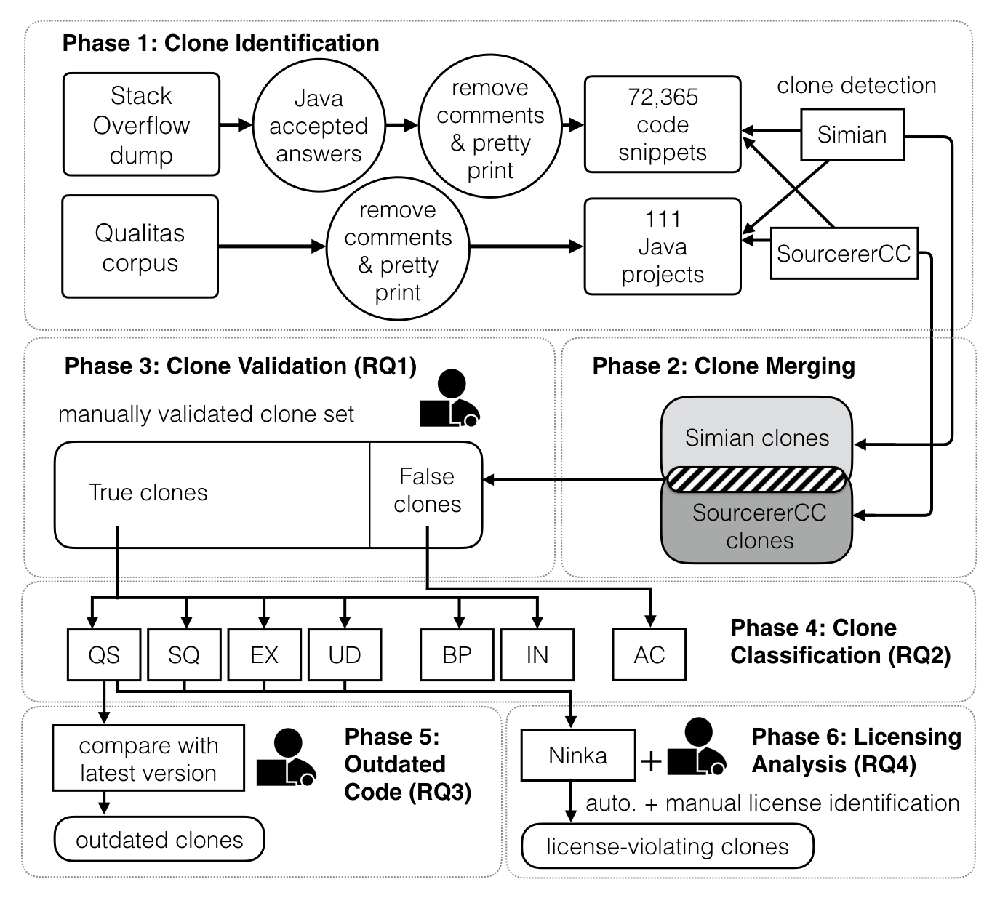
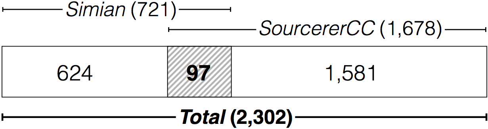
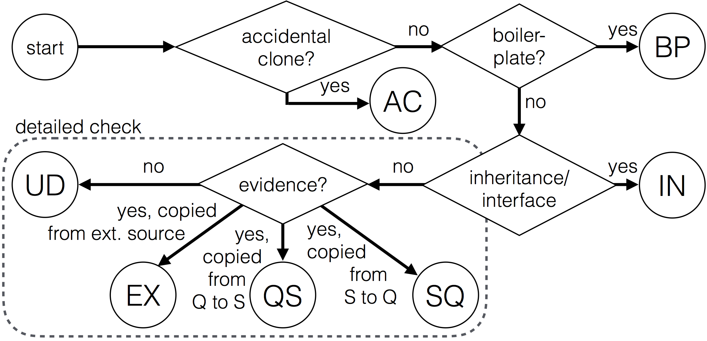

Discussions
Overall Discussion
We designed our study in 6 phases as depicted in the figure below where we build different data sets to answer each of our five research questions.

Phase 1: Clone Identification
Data Sets
We rely on two source code data sets in this study: Java code snippets in answers on Stack Overflow and open source projects from the Qualitas corpus.
| Data set | No. of files | SLOC | Median |
|---|---|---|---|
| Stack Overflow | 72,365 | 1,840,581 | 17 |
| Qualitas | 166,709 | 19,614,083 | 60,667 |
Clone Detection Tools
- Simian is a text-based clone detector that locates clones at line-level granularity and has been used extensively in several clone studies [(Ragkhitwetsagul et al., 2016),(Ragkhitwetsagul et al., 2017), (Wang et al., 2013), (Mondal et al., 2011), (Cheung et al., 2015), (Krinke et al., 2010)].
- SourcererCC (Sajnani et al., 2016) is a scalable token-based clone detector which detects clones, of type-1 up to type-3, at either function- or block-level granularity.
Clone Detection Configuration
We configured Simian and SourcererCC based on their established default configurations chosen by the tools’ creators.
| Tool | Configurations |
|---|---|
| Simian (S) | Threshold=10, ignoreStringCase, ignoreCharacterCase, ignoreModifiers |
| SourcererCC (SCC) | Functions, Minimum clone size=10, Similarity=80% |
Number of Online Clones Pairs
| Stats | Total clone pairs | Average clone size |
|---|---|---|
| Simian | 721 | 16.61 |
| SourcererCC | 1,678 | 17.86 |
Phase 2: Clone Merging
Clones from the two detectors can be duplicated. To avoid double-counting of the same clone pair, we adopted the idea of clone agreement (Bellon et al., 2007) which has been used in clone research studies [(Funaro et al., 2010), (Wang et al., 2013), Ragkhitwetsagul et al., 2016)] to merge clones from two data sets. Clone pairs agreed by both clone detection tools have a high likelihood to be duplicate and must be merged.

Using the ok-match criterion with a predefined threshold t of 0.7 similar to Bellon’s study (Bellon et al., 2007), we merge 721 clone pairs from Simian and 1,678 clone pairs from SourcererCC into a single set of 2,302 online clone pairs.
There are only 97 common clone pairs between the two clone sets as depicted in the figure above. The low number of common clone pairs is due to SourcererCC reporting clones with method boundaries while Simian is purely line-based.
Phase 3-4: Validation and Classification
We used the 2,302 merged clone pairs for manual validation and classification. The validation and classification of the pairs was done at the same time. The clone validation process (phase 3 in the framework) involves checking if a clone pair is a true positive or a false positive.
Moreover, we are also interested in the patterns of code cloning so we can gain more insights into how these clones are created (phase 4 in the framework).
Manual investigation
To mitigate the human error, we deployed two persons in the manual clone investigation process. The two investigators separately went through each clone pair candidate, looked at the clones, and decided if they are a true positive or a false positive.

Then, by following the step shown in the figure above, they classified the clones into an appropriate pattern as displayed in the table below. After the validation, the results from the two investigators were compared and conflicts were resolved.
The online cloning classification patterns
| Pattern | Description |
|---|---|
| QS | Cloned from Qualitas project to Stack Overflow (Q –> S) |
| SQ | Cloned from Stack Overflow to Qualitas project (S –> Q) |
| EX | Cloned from an external source to Stack Overflow (X –> S) |
| UD | Cloned from each other or from an external source outside the project (unknown) |
| BP | Boiler-plate or IDE auto-generated |
| IN | Inheritance, interface implementation |
| AC | Accidental similarity, false clones |
Phase 5: Outdated Clones
To search for outdated online code clones, we focused on the QS clone pairs that were cloned from Qualitas to Stack Overflow and compared them with their latest versions. We downloaded the latest version of the Qualitas projects from their repositories on October 3, 2017.
For each QS online clone pair, we used the clone from Qualitas as a proxy. We searched for its latest version by the file name and located the cloned region in the file based on the method name or specific code statements. We then compared the Stack Overflow snippet to its latest version line-by-line to find if any change has been made to the source code.
We also made sure that the changes did not come from the
modifications made to the Stack Overflow snippets by the posters but from the
updates in the projects themselves. When we found inconsistent lines between the
two versions, we used git blame to see who modified those lines
of code and the timestamps. We also collected IDs of issue tracking information
if the code change is linked to an automatic issue tracking system, such as Jira
or BugZilla.
Phase 6: Licensing Analysis
We analysed licensing conflicts of the online clones in the QS, EX, and UD set. The licenses were extracted by Ninka, an automatic license identification tool (German et al., 2010).
Since Ninka works at
file level, we report the findings based on Stack Overflow snippets and Qualitas
source files instead of the clone pairs (duplicates were ignored). For the ones
that could not be automatically identified by Ninka and have been reported as
SeeFile or Unknown, we looked at them manually
to see if any license can be found.
For EX clone pairs that are cloned from external sources such as JDK or websites, we manually searched for the license of the original code.